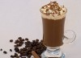

plugin_output; ?>
Breakfast Blend

This is a blend that uses specific beans, each with their own roast. There is no option to select your own roast. Mixed partly with espresso for additional kick.
This is a blend that uses specific beans, each with their own roast. There is no option to select your own roast. Mixed partly with espresso for additional kick.